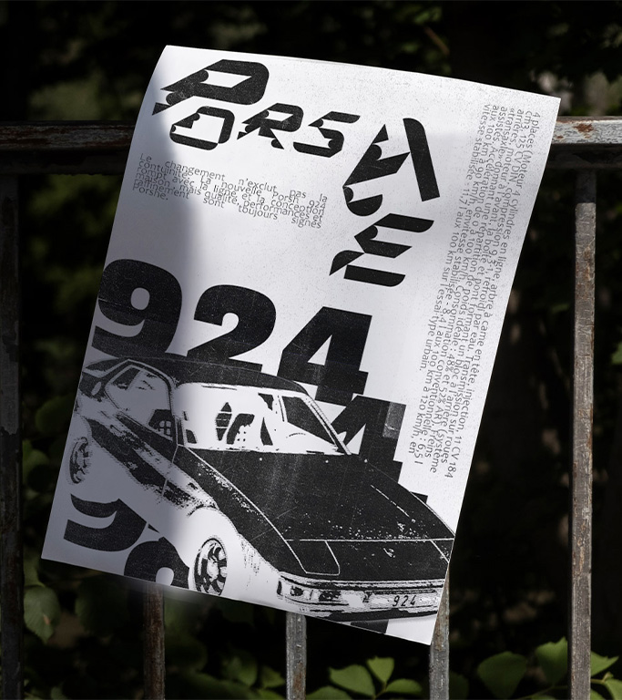
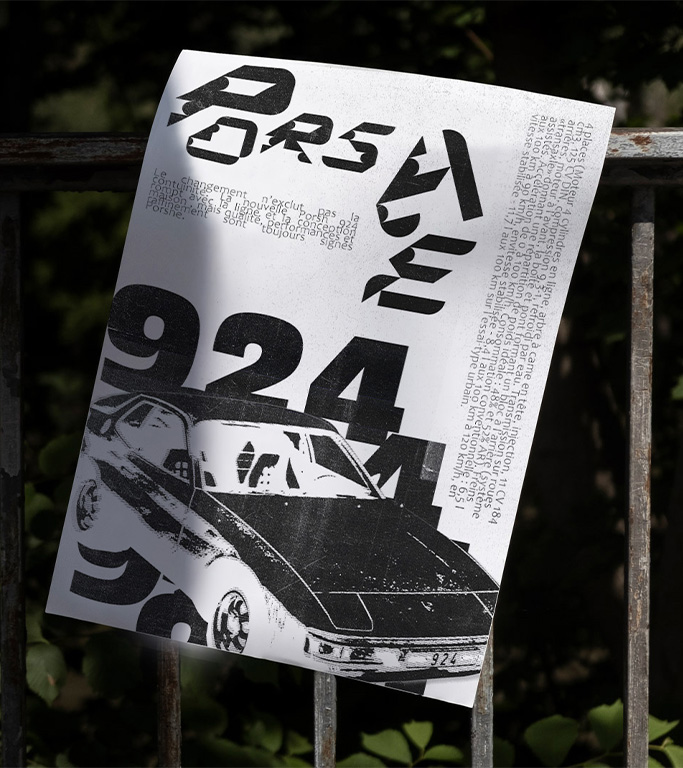
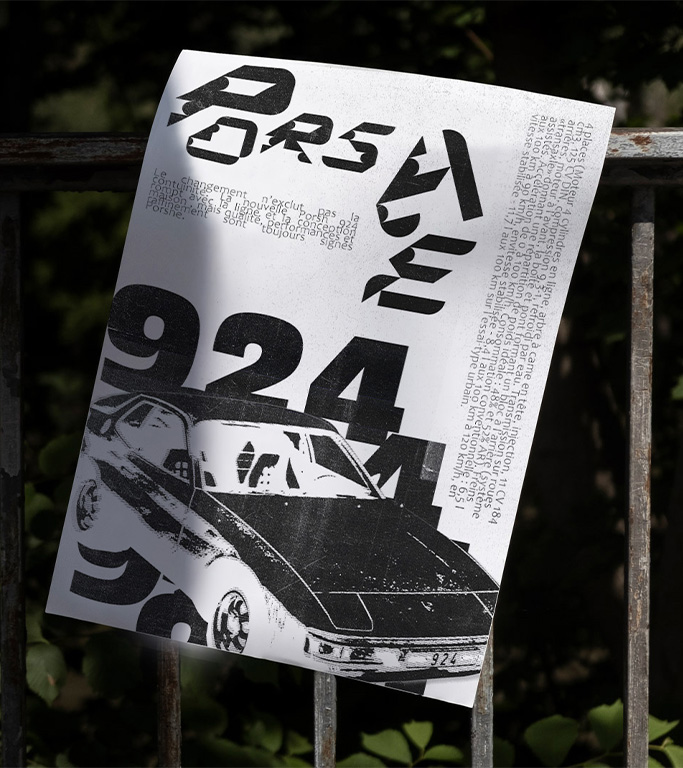

Conception d’une affiche à l’occasion de la participation d’Archi Boucher aux États généraux de l’alimentation, explorant les liens entre artisanat et expression visuelle. Pour ce projet diverses techniques plastiques ont été expérimentés— linogravure, encre et aquarelle — afin de retranscrire l’aspect brut et texturé de la viande. Ces explorations ont conduit à une composition graphique dynamique, où chaque élément visuel découle des textures obtenues au cours de ces tests. L’affiche finale défini l’identité artisanale et avant-gardiste de la boucherie tout en captant l’essence des thématiques abordées lors de cet événement national.
